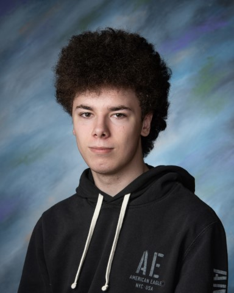

Hello I am Thomas Manning, I am a high school student, grade 12. I currently go to Old Colony Regional Vocational Technical High School, OC RVTHS. At OC RVTHS I take part in the computer science program. I have developed many crucial skills for this field working in this program for the past 4 years. My most important skill is that I am a very critical thinker. I am always thinking about how I can improve and innovate my work even after I complete it. I also am very skilled in communicating with a team, with what needs to be done, how to piece it off into segments to give everyone a job to make the work be finished as fast and efficiently as possible. I have also gained experience during these 4 years in computer science, such as I know a few very strong and commonly used languages: Java, JavaScript, Python, and C#.
After graduating high school I plan to continue my education in computer science by going to school at UMass Dartmouth. At UMass Dartmouth I will major in computer science with a concentration in software engineering. Once I am through with UMass Dartmouth I will go on to work as a software developer, as that is what interests me and I find most enjoyable about computer science as a whole.
